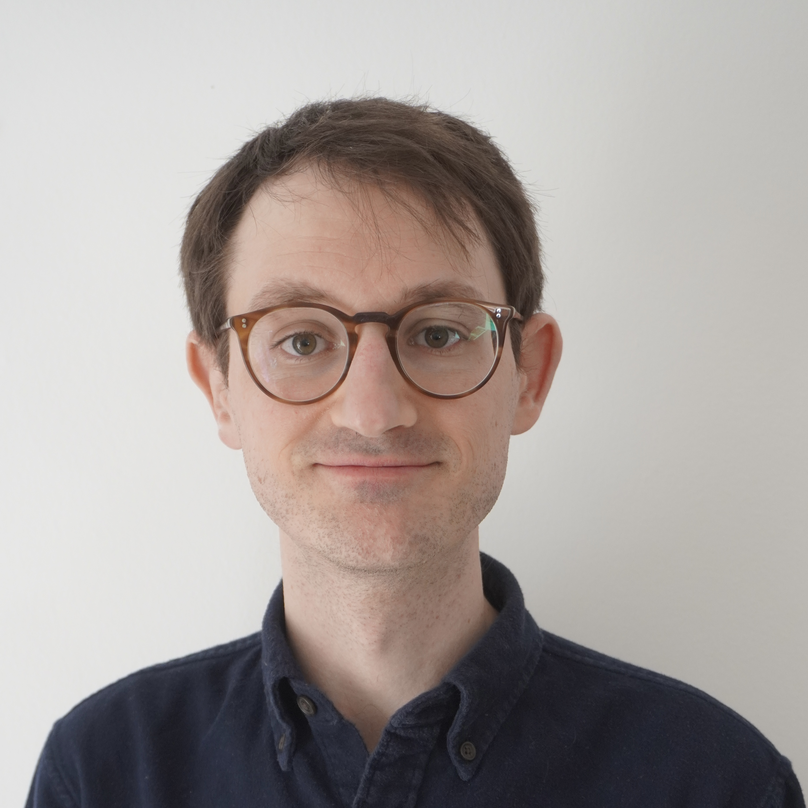

Alexander Rolle

Short biography
I am a postdoctoral researcher in the Mathematics department at
The Technical University of Munich,
working with
Ulrich Bauer.
From September 2019 to September 2021 I was a postdoc with
Michael Kerber
at TU Graz, Austria.
In August 2019 I finished a PhD in Mathematics at
The University of Western Ontario, Canada, supervised by
Rick Jardine.
Research interests
My research interests are in applied topology, especially applications to statistics, data analysis, and machine learning.
Publications and preprints
-
Diverse 3D cellular patterns underlie the development of Cardamine hirsuta and Arabidopsis thaliana ovules,
with Tejasvinee Atul Mody, Nico Stucki, Fabian Roll, Ulrich Bauer, and Kay Schneitz (2023).
Preprint. Available at
bioRxiv.
-
Persistable: persistent and stable clustering, with Luis Scoccola (2023).
Journal of Open Source Software. Available at
JOSS.
-
Compression for 2-parameter persistent homology, with Michael Kerber and Ulderico Fugacci (2023).
Computational Geometry. Available at
ScienceDirect (open access) and
arXiv.
-
A unified view on the functorial nerve theorem and its variations, with Ulrich Bauer, Michael Kerber, and Fabian Roll (2023).
Expositiones Mathematicae. Available at
ScienceDirect and
arXiv.
-
The degree-Rips complexes of an annulus with outliers (2022). SoCG 2022. Available at
DROPS and
arXiv.
-
Fast minimal presentations of bi-graded persistence modules, with Michael Kerber (2021). ALENEX 2021. Available at
siam and
arXiv.
-
Multi-parameter hierarchical clustering and beyond (extended abstract) (2020).
Topological Data Analysis and Beyond Workshop at NeurIPS 2020.
Available at OpenReview.
-
Stable and consistent density-based clustering, with Luis Scoccola (2020).
Preprint. Available at
arXiv.
-
Torsors over simplicial schemes (2019). PhD thesis. Available
here.
-
Central extensions and the classifying spaces of projective linear groups (2018).
Preprint. Available at
arXiv.
Software
-
mpfree, with Michael Kerber.
Bitbucket.
Fast software for computing minimal presentations of 2-parameter
persistence modules.
-
Persistable, with Luis Scoccola.
GitHub.
Density-based clustering software with extensive visualization features.
Recorded talks
Some of my talks are available on YouTube:
Contact information
Postal address:
Department of Mathematics, Technical University of Munich
Boltzmannstraße 3, 85747 Garching b. München, Germany
Email address: alexander dot rolle at tum dot de